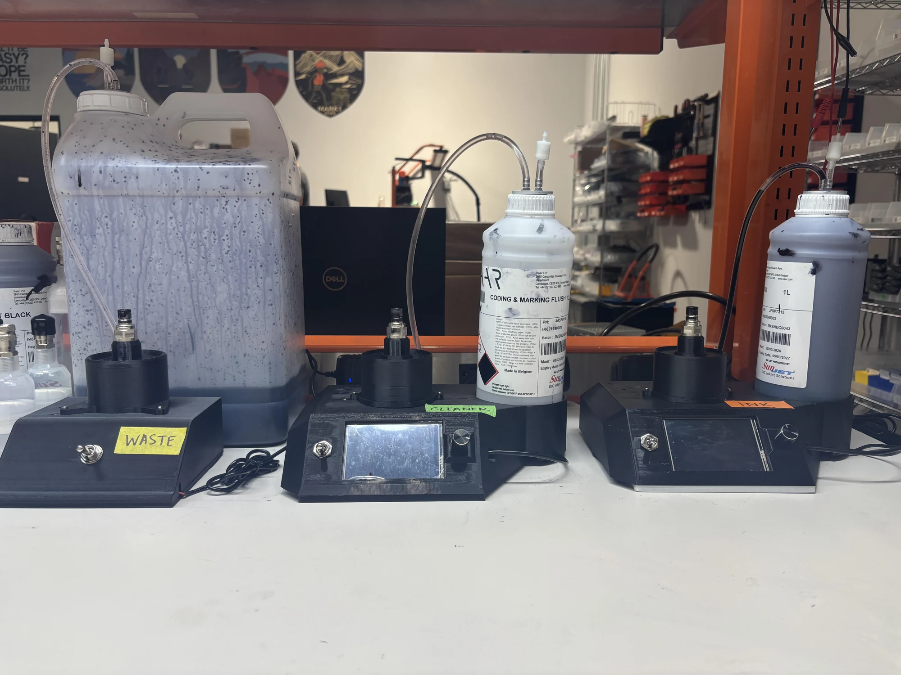
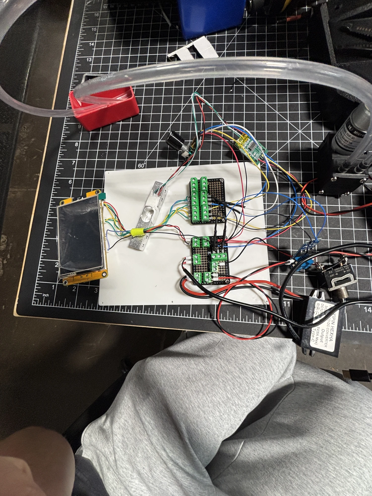
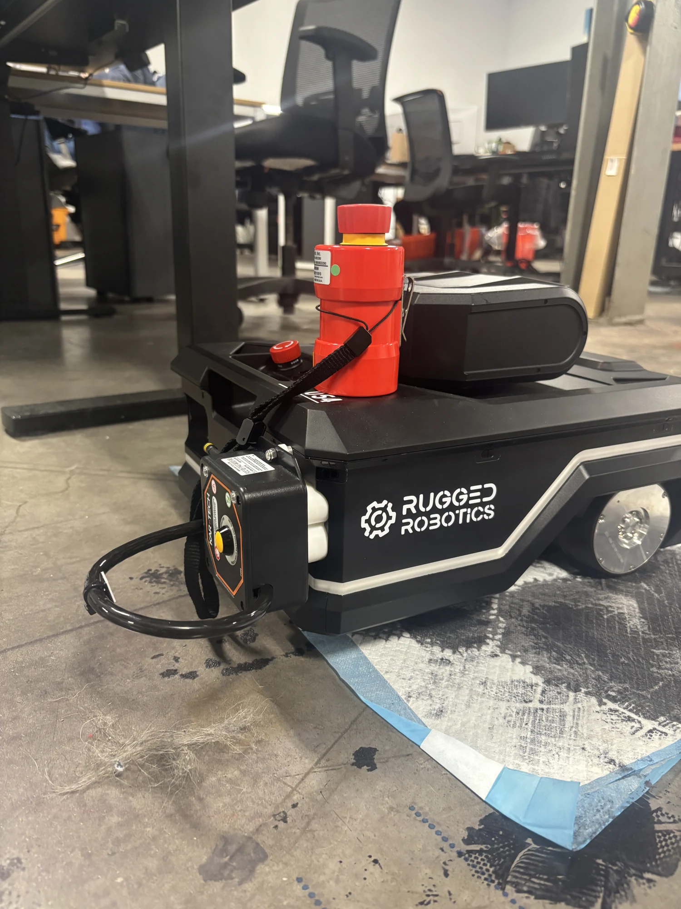

02 / Rugged Robotics
Precision in
every fill.
A desktop solvent-carrier ink fill station combining mechanical design, fluid handling, and embedded electronics.

01 / The project
A measured approach
to ink handling.
I designed a desktop solvent-carrier ink fill station and integrated an ESP32 with a load cell. The station achieved ±2 mL dosing accuracy.
The project brought together a physical dispensing system and the electronics needed to measure each fill.
02 / Development
Hardware and
electronics, together.
I developed the mechanical system alongside its controller and measurement hardware. The prototype captures the integration stage, with the display, wiring, and fluid-handling components brought together.
{kind=link}

{kind=link}

I also iterated manifold face seals using Parker’s O-Ring Handbook to isolate the solvent system from the environment.
03 / Additional internship work
Designing for
manufacturing.
Alongside the ink fill station, I worked on filter-housing design and assembly tooling.
- Modeled a 20-micron filter housing using surface modeling, with sealing features intended to prevent dust ingress into the chassis.
- Optimized and manufactured 3D-printed and machined jigs, supported by GD&T drawings.
- Improved robot-subsystem assembly efficiency by over 200%, enabling subsystem-level checkout and testing.
Next project